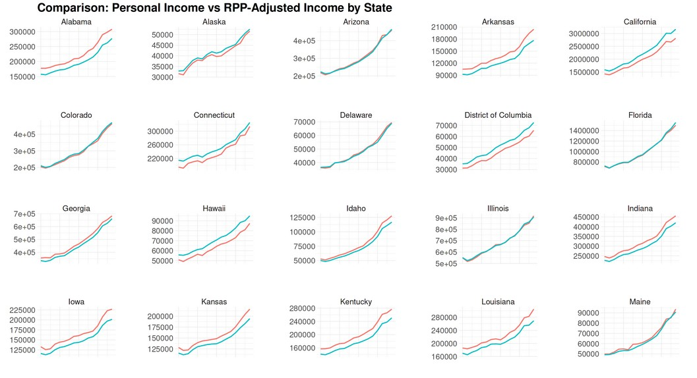

I’m a Data Analyst with a strong passion for transforming data into meaningful insights. I completed the Google Data Analytics Certificate through Coursera, where I developed practical skills in SQL, Tableau, and R. Additionally, I’ve taught myself Python to expand my analytical capabilities. I’ve applied everything I’ve learned to real-world projects that demonstrate my ability to solve problems through data. I’m seeking opportunities to work as a Data Analyst and contribute to making a positive impact through data-driven solutions.
-
Faculty of Economics – University of Havana
Sep 2018 – Present
Completed up to the fifth year in Economics, developing skills in data analysis, decision-making, macro/microeconomics, econometrics, and finance. Participated in research projects and earned a degree in data analysis through outstanding academic performance.
-
Business Intelligence Certificate – Miami Dade College
Jan 2025 (In Progress)
A program focused on advanced data analysis, visualization, and business intelligence. Training in Power BI, Tableau, SQL, and advanced Excel to support strategic decision-making through dashboards, data modeling, and reporting.
Recent Work
Renewable Energy Analysis in Tableau
This Tableau project explores residential renewable energy use from 2020 to 2024, focusing on key trends in monthly energy consumption, regional and national adoption rates, and the impact of demographic and socioeconomic factors such as income levels and household size. It also quantifies the economic savings achieved by households that adopted renewable sources, providing insights into how clean energy contributes to cost reduction and sustainability. The analysis serves as a valuable resource for shaping energy policies, designing targeted subsidies, and promoting efficient energy programs.

Personal Income & Cost of Living in the U.S.
This project analyzes how personal income and Regional Price Parities (RPPs) evolved across U.S. states between 2008 and 2023, offering a comprehensive view of real purchasing power over time. By comparing income growth with regional cost-of-living adjustments, it uncovers significant disparities in economic well-being across states. The analysis also highlights how inflation and regional economic conditions influence residents’ actual financial health, providing valuable insights for policymakers, economists, and anyone interested in understanding long-term income dynamics in the U.S.